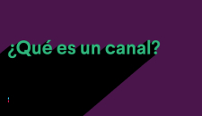

Muévete más rápido organizando tu vida laboral
La clave de la productividad en Slack son los espacios organizados, llamados "canales", uno diferente para cada proyecto en el que estés trabajando.Al tener todas las personas, mensajes y archivos relacionados con un tema en un mismo lugar, puedes avanzar mucho más rápido
Obtener más información sobre los canales - ¿Que es un canal?
¿Como crear un canal?
Focaliza tu tiempo marcando tus propias condiciones
Date la flexibilidad de trabajar cuand, donde y como mejor te venga. Toma el control de las notificaciones, colabora en directo o en el momento que prefieras y encuentra respuestas en las conversaciones de toda la empresa
Abrir la puerta a horarios de trabajo más flexiblles en Slack
Como pausar las notificaciones
Simplifica el trabajo en equipo para todo el mundo
Ofrece a todos tus compañeros (de dentro y fuera de tu empresa) una forma más productiva de mantener la sincronización. Responde más rápidamente con emojis, mantén las conversaciones centradas en los canales y simplifica toda tu comunicación en un mismo lugar.
Descubrir cómo trabajar con socios externos en SlackTrabaja con socios externos mediante Slack

Cómo compartir ideas en un canal
Primeros pasos en Slack
1
Regístrate
Crea un nuevo espacio de trabajo de Slack en unos instantes. Todos los equipos, sean del tamaño que sean, pueden probarlo de forma gratuita.
2
Invita a tus compañeros de trabajo
Slack es mejor en compañía (no, en serio, resulta un poco decepcionante si se utiliza en solitario) y es muy fácil invitar a tu equipo.
3
Pruébalo
Dirige un proyecto, coordínate con tu equipo o simplemente habla de ello. Slack es un lienzo en blanco para el trabajo en equipo.

Bienvenido al lugar donde trabaja el futuro
¿POR QUÉ SLACK
PRODUCTO
PRECIOS
RECURSOS
EMPRESA
Estado
Privacidad
Términos
Preferencias
Contáctanos
Cambiar de region
Descargar Slack
©2022 Slack Technologies, LLC, una empresa de Salesforce. Todos los derechos reservados. Las distintas marcas comerciales pertenecen a sus respectivos propietarios.